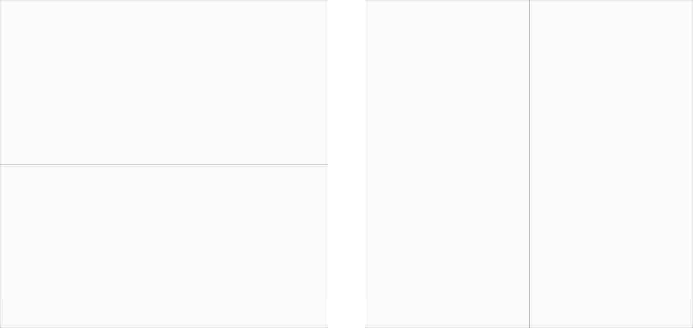
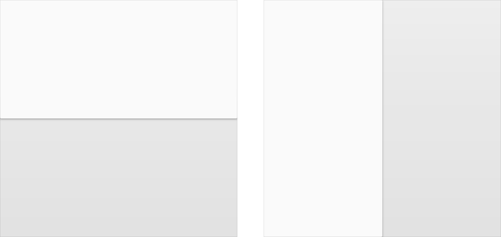

머티리얼 디자인에서, 페이퍼의 물리적 속성은 그 화면에서 번역됩니다. 어플리케이션의 배경은 페이퍼 한 장의 평평하고 불투명한 질감과 유사합니다.
어플리케이션의 동작은 크기가 변경되고, 섞이며, 여러 장이 함께 묶이는 페이퍼의 능력을 흉내냅니다. 스테이터스 바나 시스템 바와 같은 어플리케이션 외부의 존재하는 요소들은 다른 취급을 받습니다. 그들은 그들 아래에 앱 내용물로부터 분리되어 있고, 페이퍼의 물리적 특성을 갖지 않습니다.
머티리얼에 관한 자세한 정보를 얻기 위해서, 머티리얼의 특성을 확인하십시오.
층
공통의 가장자리 전체를 공유하는 페이퍼의 두 시트를 층(Seam)이라고 부릅니다. 층으로 연결되는 동안, 그들은 함께 움직입니다.

머티리얼의 두 시트에서 층(Seam)
계단
페이퍼에서 서로 다른 z축 위치(또는 깊이)로 겹쳐진(Overlapping) 두 시트는 계단(Step)을 형성합니다. 그것들은 서로 독립적으로 이동합니다.

겹치는 머티리얼의 두 시트에서 계단(Step)